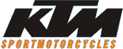
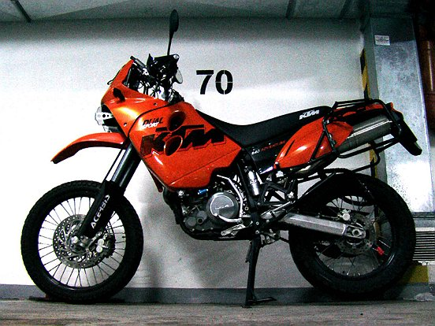
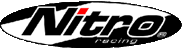

BIKE&STUFF
MotoSyberia.2.0.2009 KTM EXC 400
Wow wow wow wow! Fuel
Our evil bikes must have at least 35L of fuel.  Instead of the lamp we will put a 5L tank on the front forks: 
...so it gives us 29L, so we will have to take 6L/8L fuel more on the back. Pirelli
Pirelli eto ocien haroszaja kampania. Not only they make cool tyres, but they will also help us in this evil plan.  This time we gonna ride the Pirelli MX Extra: 
...with Pirelli mousse inside: 
KTM LC4 640 Adventure
More soon...
Blue color sponsored by Blue Media
Na wyprawie MotoSyberia kolor niebieski sponsorowany jest przez firme Blue Media.
Back Nitro MX418
MotoSyberii2007 is sponsored by Nitro - the producer of the coolest helmet Nitro MX418.
The helmet has good ventilation system, nice shape, is comfortable and the most important, it has an aggressive and scary look .
Back Bel-Ray lubricants
MotoSyberii2007 is sponsored by Bel-Ray - producer of high quality motorcycle lubricants.
Our KTMs will be feeded with an oil specially designed for thumpers - Bel-Ray Thumper 4-Stroke Racing: it's specifically engineered to meet the demands of single cylinder, multi-valve 4-stroke racing engines. The high temperatures and severe loads of racing require the exceptional film strength, shear- and temperature stability of Bel-Ray Thumper 4-Stroke Racing Motor Oil. Larsson
LARSSON thx for help! Pirelli
PIRELLI thx for help! Cumulus
Cumulus thx for help! We will be using Mysterious Traveller 650 sleeping bags. Not afraid of belo 0 C temps in Chukotka anymore :)
Prokajak
Big THX for Prokajak, where we can always get very durable kayak bags which we use for packing.
7anna - Crank Brothers
Crank Brother Power Pump
|